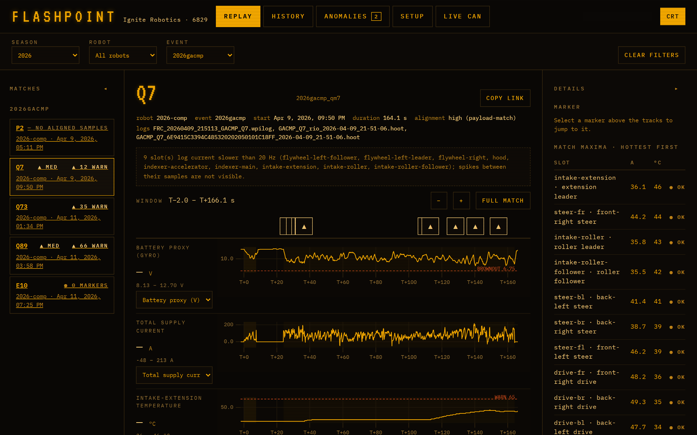

View: Replay¶
Replay shows one competition match on a shared timeline: battery voltage, current and temperature tracks, rule markers for what went wrong and when, and a readout of every motor. Use it after a match to see what happened, and to hand the raw logs to AdvantageScope for a frame-by-frame look. It works in flashpoint serve and in a static export on a USB stick (Take Replay on a USB stick).

Layout¶
| Part | What it holds |
|---|---|
| Filter bar | SEASON, ROBOT and EVENT, which narrow the match list (below) |
| MATCHES rail (left) | The match list, grouped by event |
| Main column | The match header, notes, the timeline (markers, four tracks, scrub bar) and COMPARE |
| DETAILS rail (right) | The selected marker, the readout, and OPEN IN ADVANTAGESCOPE with the raw log downloads |
On a wide screen each rail scrolls on its own. The ◂ and ▸ buttons at the top of a rail shrink it to a strip labelled MATCHES or DETAILS; press the strip to bring it back. Your browser remembers this for Replay, per side.
Replay lists only competition matches: a log is a match when the wpilog has FMS data or a match-style file name (How matches are identified). Practice and pit logs count in History, not here.
The header and filter bar¶
These are the same on every view.
- The tabs REPLAY, HISTORY, ANOMALIES, SETUP and LIVE CAN. A static export has only REPLAY.
- The ANOMALIES tab carries a count of open anomalies at normal sensitivity, across the whole lake, whatever the filters. It is highlighted when any of them is HIGH.
- The SETUP tab carries a ! badge while the lake's backup is overdue (
overdue_hin acquire.toml). - On the right: the lake folder (served), or a STATIC EXPORT pill, and CRT, which turns the scanline texture on and off. This browser remembers the CRT setting.
The filter bar sits under the header on Replay, History and Anomalies:
- SEASON, ROBOT and EVENT pickers, newest first. Choosing a season narrows the robot and event lists to it.
- A UNIT chip when a unit is selected (from History). Press its ✕ to remove it.
- CLEAR FILTERS clears every filter. It is greyed out when nothing is set.
A filter set in one view stays set in the others, and it's in the address, so a copied link keeps it. A value no match has (from an old link) stays chosen and is marked "(not in this index)" here, or "(not in this lake)" in History and Anomalies.
Match list¶
Each match is a button showing:
- its label (Q7, E10, P3, SF2, F1) and the robot and start time;
- the worst severity (HIGH, MED or LOW) of the open anomalies flagged in it, at the sensitivity last chosen in the Anomalies view. Hover over it for the count;
- its markers: n FAULT and n WARN, or 0 MARKERS when no rule fired;
- NO ALIGNED SAMPLES instead of marker counts when the match has no data to chart (below);
- ▲ LOW ALIGNMENT · alignment when the hoot and wpilog clocks couldn't be matched with high confidence.
Events are listed in reverse order of their event key (2026gacmp, 2026gadal), so a later season comes first; matches within an event are in start order. Selecting a match opens it.
Filters in Replay¶
- With no filter in the address at all (a fresh link), Replay picks the selected match's season and event, or the latest match's.
- The unit filter isn't applied, because the match list doesn't record which units played each match. The chip says "not applied in Replay".
- If the match data was built by an older Flashpoint, SEASON is greyed out with "Rebuild with
flashpoint reportto filter by season." - When the filters leave no match: "No matches for these filters.", which value no match has, and a CLEAR FILTERS button.
- When the open match isn't in the filtered list: "Selected match label is hidden by the filters."
Match header¶
- The match label and key, and COPY LINK, which copies the page address (it reads COPIED for a moment). The address holds the match, the tracks, the cursor, the selected marker, the zoom window, the overlay and the filters.
- A line of facts: robot, event, start, duration, alignment (with the method), and the log files.
- Notes, when they apply:
| Note | Shown when |
|---|---|
| "▲ Low alignment confidence (alignment): hoot and wpilog times may disagree. Check events against AdvantageScope." | Alignment isn't high |
| "Temperature not logged." followed by "The hoots are not Pro-licensed, so they carry no temperature." or "No temperature was logged for this match." | No slot has temperature (Phoenix Pro and temperature) |
| "No match phases were found (the robot was never enabled in this log), so time is measured from the first sample and the whole log is shown." | The log has no auto, teleop or test phase |
| "n more session(s) share this match key (m without aligned samples); their raw logs are listed below." | Several sessions have the same match key |
| "n slot(s) log current slower than 20 Hz (slots); spikes between their samples are not visible." | A slot's current logs slower than 20 Hz (Signal rates) |
Timeline¶
Window and zoom¶
The WINDOW line shows the visible span, such as "T+12.0 – T+48.5 s". Every track and the marker strip share it.
| Control | What it does |
|---|---|
| − | Zoom out by a factor of two |
| + | Zoom in by a factor of two |
| FULL MATCH | Show the whole match |
| Shift-drag on a track | Zoom to the dragged span |
| Ctrl or ⌘ + scroll, or a trackpad pinch | Zoom around the pointer |
+ or = |
Zoom in, while a timeline control (a marker or a zoom button) has focus |
- or _ |
Zoom out |
0 |
Full match |
The narrowest window is half a second. Zooming centres on the cursor when it's in view.
Replay stores each match in up to 1,000 time buckets (fewer for a long match, to keep each match's file small). Zoomed in to less than half the match, the served app fetches finer data from the lake for the visible window, and the line reads "n ms buckets from the lake". Until it arrives, or in a static export, it reads "bucket resolution (n ms)". If finer data can't be had, it adds "finer data unavailable:" and the reason, such as "Rebuild with flashpoint report to zoom past bucket resolution."
Markers¶
Markers sit in a strip above the tracks: ▲ for WARN, ✕ for FAULT. Hover over one for its message. Selecting one moves the window to it if needed, puts the cursor on it, and shows it in the MARKER panel on the right. Markers outside the window are hidden and counted at the edges, as ◂ n and n ▸; press a count to select the nearest hidden marker on that side.
Markers come from fixed rules and state what the log shows. They don't name a cause. The thresholds are in report.toml:
| Marker | Level | Source | Fires when | Message |
|---|---|---|---|---|
| Temperature | WARN | the slot | Temperature rises to temp_warn_c |
"Temperature n °C" |
| Temperature | FAULT | the slot | Temperature rises to temp_fault_c |
"Temperature n °C" |
| Brownout | FAULT | power | The battery proxy stays below brownout_v for at least brownout_hold_s |
"Battery proxy (proxy) v V (below limit V) for t s" |
| Sag | WARN | power | The battery proxy goes below sag_v, outside a brownout |
Same form as brownout |
| Stall | WARN | the slot | Stator current is at least 20 % of the motor's stall current while the rotor turns slower than 0.5 rps | "Stalled t s, stator up to n A" |
| Reboot | FAULT | the slot | The device reset during the match | "Device rebooted", with the reset count before and after when the log has it |
| Dropout | WARN | the slot | One device's CAN frames stopped for at least dropout_warn_s while others still talked |
"No CAN frames for t s" |
| Bus gap | WARN | bus:name | A whole CAN bus was silent for at least sample_gap_s |
"Whole bus silent for t s" |
A temperature marker fires each time the temperature crosses a limit going up. Low-voltage dips less than a second apart are one marker. The battery proxy is the robot file's battery_proxy slot, or the median supply voltage across devices when there is none. The stall rule's 20 % and 0.5 rps are fixed in Flashpoint, not in report.toml. CAN markers need the hoots' CAN data. They name the bus by the robot code's name when the robot file has a [[bus]] entry for it.
Tracks¶
There are four tracks. By default they are:
- Battery proxy (V), labelled with the proxy it uses: a slot, "median of n devices", or "not logged". A dashed reference line marks BROWNOUT at
brownout_v. - Total supply current (A), the sum of every slot's supply current.
- The temperature of the hottest motor, with a dashed WARN line at
temp_warn_c. - The supply current of the highest-current motor.
Opened from History or Anomalies for one slot, track 4 shows that slot's supply current, and track 3 its temperature when it logged one.
Each track's label shows its name, the value at the cursor, and its lowest and highest value in the window ("no samples" when there are none). The picker under it swaps the track for Battery proxy (V), Total supply current (A), or any slot's supply current, stator current, rotor velocity, motor voltage or temperature. A track a slot didn't log reads "not logged", which isn't the same as zero.
The battery and per-slot current, velocity and voltage lines are the mean per bucket, with a shaded band between the bucket's minimum and maximum. Temperature is drawn as it changed, with no band. Auto and teleop are shaded behind the lines, auto a little darker. A value carries forward for up to a second over empty buckets, so slow signals draw as lines.
Under a track's picker, a badge appears for each open anomaly flagged in this match on that slot (the battery track shows the robot's battery anomalies): its method and title, such as "STEP · Supply current P95 stepped up ...". It opens the anomaly in the Anomalies view. In a static export the badge can't open anything and says when its snapshot was taken.
Cursor¶
Press or drag on any track to place the cursor; the SCRUB slider does the same. The time shows beside it ("no cursor" when there's none). MAXIMA removes the cursor, and the readout goes back to each motor's match maximum.
COMPARE¶
COMPARE overlays another match with aligned samples, drawn dashed on every track and aligned on match time. Pick "no overlay" to remove it. The readout gains two columns for the overlay match; a slot that match didn't have reads "absent".
Details rail¶
MARKER¶
The selected marker's level and source (such as WARN · intake), its time, its message, and "Until T+t s" when it covers a span, then "Markers come from fixed rules (config/report.toml) and state what the log shows; they do not name a cause." With none selected it says "Select a marker above the tracks to jump to it.", or "No rule fired in this match."
Readout¶
One row per slot: the slot and its role, supply current (A), temperature (°C) and a temperature status:
| Status | Temperature |
|---|---|
| OK | Below temp_warn_c |
| WARN | At or above temp_warn_c |
| FAULT | At or above temp_fault_c (the row is highlighted) |
With no cursor the heading reads MATCH MAXIMA · HOTTEST FIRST and the rows are each slot's match maximum, hottest first. With a cursor it reads AT T+t S, with the match phase, and the rows are the values at that moment. A slot that doesn't log a value reads "not logged".
OPEN IN ADVANTAGESCOPE¶
OPEN IN ADVANTAGESCOPE opens the match's wpilog in AdvantageScope on the laptop running serve. A static export has no button, only the downloads. The result says "Opened file in AdvantageScope." and, when there are hoots, the folder to add them from with File › Insert log. A hoot whose end is missing (the robot lost power while writing it) is marked INCOMPLETE. If it fails: "AdvantageScope did not open:" and the reason. See Open a match in AdvantageScope and [advantagescope] in report.toml.
Under it, a download link for each raw log: ⇩ wpilog, or ⇩ hoot · and the bus. "No raw logs are recorded for this match." when there are none. A static export made with --no-raw lists each log's lake hash instead: "Raw logs not included in this export. Their lake hashes:".
Empty and error states¶
| State | What Replay shows |
|---|---|
| The lake has no imported logs | No Replay data: "The lake holds no imported logs yet:" and the lake folder, the import command (flashpoint ingest --lake "<lake>" <folder>), a link to "Import logs by hand", how many files were quarantined if any, and Open Setup (served). The link reads "Open Setup: n problems to fix" when Setup has problems |
| Logs, but none is a match | No Replay data: "Replay lists only competition matches, identified from FMS data in the log or a match-style log file name. The lake's n sessions are practice, pit or other logs that are not a competition match." and a link to History, which counts their motor usage |
| Matches, but no Replay data yet | No Replay data: "n matches are waiting for Replay data. On the laptop that holds the lake, run:" flashpoint report |
| A linked match isn't built | The match key, "Replay data for this match is not built." and "Build it with flashpoint report --match <key>" (a static export says "This export does not include it."). The raw logs are still listed |
| A match with no aligned samples | "label · no aligned samples" and the reason: no wpilog to align the hoots to; no robot file for the robot code's project in that season (with Open Setup > Draft robot); or no device data could be aligned. Only the raw logs are available |
serve builds missing Replay data when it starts, so the third state is usually seen in a static export, or while a build runs.
Shared on the network¶
Opened from another computer (flashpoint serve --host 0.0.0.0), Replay works the same except OPEN IN ADVANTAGESCOPE: in its place it says "Open in AdvantageScope is only available on the machine running Flashpoint. Use the downloads below." With --host 0.0.0.0 that is true on the laptop itself too. The downloads still work. COPY LINK can't reach the clipboard on a plain http:// address from another computer: it still reads COPIED, so copy the address bar instead. See flashpoint serve.